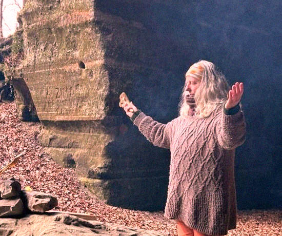

해외의 신내림
해외, 외국인들에게서 나타난 한국의 신내림
이미지 클릭
독일인 안드레아 칼프
독일인 안드레아 칼프(50)는 2006년 중요무형문화재 제82-2호 보유자였던 만신(무당을 높여 부르는 말) 김금화로부터 신내림을 받았다. 칼프는 오스트리아에서 열린 샤머니즘 콘퍼런스에 참석했다가 김씨를 만났고, 그로부터 "당신에게 무슨 일이 일어나고 있는지 알고 있다. 한국에서 내림굿을 받아야 한다"는 얘기를 들었다. 칼프는 독일로 돌아가 아무 일도 없었던 것처럼 예전의 삶을 계속하려 했다지만, 결국 한국으로 와서 신내림을 받았다.
스위스인 헨드리케 랑에
스위스인 헨드리케 랑에(54)는 사물놀이를 통해 한국 문화를 처음 접했다. 자연스레 진도씻김굿 등 무속 의식에도 관심을 갖게 됐지만, 무속 신앙 자체에는 관심이 없었다. 하지만 라디오에서 독일 여성이 한국에서 신내림을 받았다는 얘기를 들었고, 2008년 가족을 자살로 잃게 되자 칼프에게 연락을 취했다. 스케이트를 타다가 다치는 등 자신에게도 안 좋은 일이 잇따라 생기자 랑에는 김씨를 찾아가 내림굿을 받았다.

이미지 클릭
이미지 클릭
채희아
채희아(84)씨는 서울대 음대에서 국악을 전공한 뒤, 미국 유학 중 신병을 앓아 한국으로 귀국해 1981년 김금화로부터 신내림을 받았다. 채씨는 "무용 민속학 과정에서 샤머니즘을 공부할 때는 무당으로 입문할 생각이 없었지만 신령이 나를 선택했다. 김씨를 만나기 전부터 이미 수차례 신병을 앓았다"고 말했다.
신내림이 한국에서만 나타나는 '사회문화적' 현상인지, 세계 여러 곳에서 발생하는 현상인지 궁금해하는 이들이 많다.
위 사례들을 보면 외국인, 해외에서도 한국 특유의 신내림은 발생한다는 것을 알 수 있다.
위 사례들을 보면 외국인, 해외에서도 한국 특유의 신내림은 발생한다는 것을 알 수 있다.